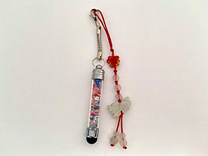

These are two keychains that I attached to each other because I couldn't decide which one to attach to my phone. I got the mini colorful stylist for free when I ordered a phone case. It was so pretty and cute, so I thought it would be useful if I'm ever wearing gloves and using my phone. I got the the dragon jade keychain from an Asian bookstore because it represents my zodiac animal and because it reminds me of my culture.